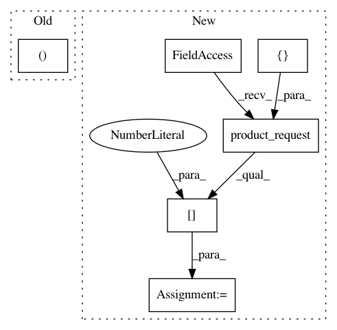

5f9adf2f98e767e346339adf045e01d19277bcc6,tests/python/pants_test/engine/test_isolated_process.py,IsolatedProcessTest,test_write_file,#IsolatedProcessTest#,303
Before Change
self.assertIn("javac", javac_version_output.value)
def test_write_file(self):
scheduler = self.mk_scheduler_in_example_fs(())
request = ExecuteProcessRequest.create_with_empty_snapshot(
argv=("/bin/bash", "-c", "echo -n "European Burmese" > roland"),
After Change
output_files=("roland",)
)
execute_process_result = self.scheduler.product_request(
ExecuteProcessResult,
[request],
)[0]
self.assertEquals(
execute_process_result.output_directory_digest,
DirectoryDigest(
In pattern: SUPERPATTERN
Frequency: 3
Non-data size: 6
Instances
Project Name: pantsbuild/pants
Commit Name: 5f9adf2f98e767e346339adf045e01d19277bcc6
Time: 2018-07-26
Author: dawagner@gmail.com
File Name: tests/python/pants_test/engine/test_isolated_process.py
Class Name: IsolatedProcessTest
Method Name: test_write_file
Project Name: pantsbuild/pants
Commit Name: 9760c73bdf078b56b1518c3edae05e2a86be5825
Time: 2020-04-28
Author: benjyw@gmail.com
File Name: src/python/pants/backend/graph_info/tasks/cloc.py
Class Name: CountLinesOfCode
Method Name: console_output
Project Name: pantsbuild/pants
Commit Name: 5f9adf2f98e767e346339adf045e01d19277bcc6
Time: 2018-07-26
Author: dawagner@gmail.com
File Name: tests/python/pants_test/engine/test_isolated_process.py
Class Name: IsolatedProcessTest
Method Name: test_fallible_failing_command_returns_exited_result